阵营
The four primary 阵营 found in 绝地潜兵 2 are the  终结族, the
终结族, the  机器人, the
机器人, the  光能者, and the
光能者, and the  联邦 of 超级地球.
联邦 of 超级地球.
终结族
the  终结族 are the successors of the bugs of the 第一次银河战争. After years of selective breeding 已更改 their physiology , they have escaped their Element-710 farms and now 散射 unchecked.
终结族 are the successors of the bugs of the 第一次银河战争. After years of selective breeding 已更改 their physiology , they have escaped their Element-710 farms and now 散射 unchecked.
| Icon | Name | 描述 |
|---|---|---|
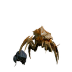 |
食腐虫 | The lowliest of 终结族, slow and weak, but capable of attracting nearby bug 突破. |
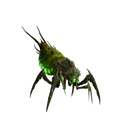 |
胆汁吐沫虫 | One of the smallest 终结族, but still deadly with its 远程 酸 spit. |
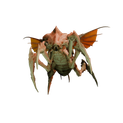 |
Pouncer | Agile 终结族 that are able to leap great distances to 攻击 绝地潜兵. |
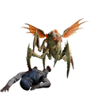 |
Hunter | Stealthy 终结族 engaging in ambush 战术, able to leap great distances and slow 绝地潜兵 with their tongue. |
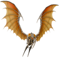 |
尖啸虫 | Flying 终结族 specialized in hit-and-run 战术. |
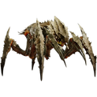 |
武士 | 中型 sized 终结族 adept in close-quarters combat. |
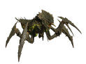 |
Bile 武士 | A mutated 变体 of the 武士 that explodes upon death. |
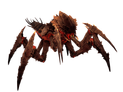 |
Alpha 武士 | A faster and deadlier 变体 of the 武士. Spawned by Alpha 指挥官. |
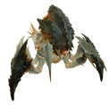 |
虫窝护卫 | A 变体 of the 武士 with 中型护甲 covering its head and legs. |
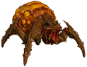 |
抚育喷涌虫 | A sluggish, 中型 有护甲 终结族 that can spew 腐蚀 bile over a wide area. |
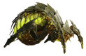 |
胆汁喷涌虫 | An 有护甲 变体 of the 抚育喷涌虫 capable of launching Bile mortars. |
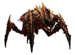 |
虫族指挥官 | Leadership-级别 终结族 capable of coordinating 攻击 and deploying 增援. |
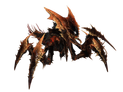 |
阿尔法指挥官 | A heavier 变体 of the 虫族指挥官, capable of 呼叫中 Alpha 武斗虫. |
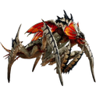 |
追踪虫 | A specialized 终结族 capable of turning partially invisible and ambushing 绝地潜兵. Spawns from 追踪虫 Lairs. |
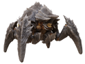 |
强袭虫 | Fast-moving 终结族 specialized in charging 攻击. Covered head to claw in 重型护甲. |
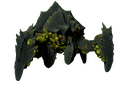 |
Spore 强袭虫 | A 强袭虫 变体 that creates a thick fog and a 庞大 爆炸 on death. |
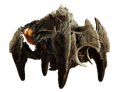 |
巨兽级强袭虫 | A 强袭虫 变体 with even more 耐久 护甲. |
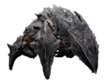 |
穿刺虫 | Heavily 有护甲 终结族 that 使用次数 large, bladed tentacles to disrupt 绝地潜兵 movements. |
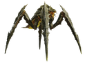 |
吐酸泰坦 | 庞大 终结族 with a potent bile 攻击, stomp 攻击, and 重型护甲. |
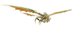 |
Dragonroach | 庞大 flying 终结族 with a potent 火焰 breath 攻击 and 重型护甲. |
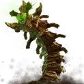 |
霸王虫 | Gigantic 终结族 capable of traversing 地下, expelling bile and crushing targets with its body 重量. |
掠食变种
the 
 捕食者 Strain is a subfaction of the 终结族, specializing in rapid and stealthy 攻击.
捕食者 Strain is a subfaction of the 终结族, specializing in rapid and stealthy 攻击.
孢裂变种
the 
 Spore Burst Strain is a subfaction of the 终结族, formerly exclusive to The Gloom. They 爆炸 on death, making close-quarters combat unadvisable.
Spore Burst Strain is a subfaction of the 终结族, formerly exclusive to The Gloom. They 爆炸 on death, making close-quarters combat unadvisable.
爆裂虫族变种
the 
 破裂 Strain is a subfaction of the 终结族. They burrow 地下 to reach 绝地潜兵, specializing in 速度 and ambush 战术.
破裂 Strain is a subfaction of the 终结族. They burrow 地下 to reach 绝地潜兵, specializing in 速度 and ambush 战术.
机器人
the  机器人 are the children of the 生化人, sharing their goal of declaring 独立 from 超级地球.
机器人 are the children of the 生化人, sharing their goal of declaring 独立 from 超级地球.
They 攻击 with heavily 有护甲 but slow moving infantry and 载具, supported by 脆弱 轻型 infantry. They also make use of numerous 支援 structures, such as mortars 和 scanning towers.
| Icon | Name | 描述 |
|---|---|---|
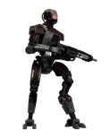 |
装甲兵 | 轻型 机器人 unit armed with a fusion SMG and 爆炸 grenades. |
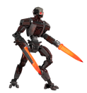 |
Brawler | 轻型 机器人 unit armed with twin heated blades that specializes in close quarters combat. |
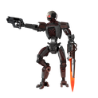 |
机械统帅 | 轻型 机器人 squad leader armed with 副武器 and heat blade for versatile 进攻型 options. |
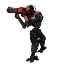 |
Rocket Raider | 轻型 机器人 unit armed with a 火箭发射器. |
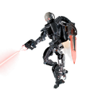 |
特攻 Raider | 轻型 机器人 unit armed with a fusion pistol, a blade, and a 喷气背包. |
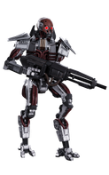 |
Marauder | Reinforced 机器人 unit armed with a fusion 步枪 and 爆炸 grenades. |
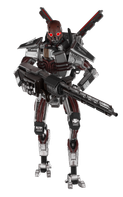 |
MG Raider | Reinforced 机器人 unit armed with a fusion 机枪, 爆炸 grenades, and a volatile backpack with a tendency to 爆炸. |
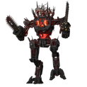 |
狂暴者 | 耐久 机器人 unit armed with dual chainsaws that specialize in close quarters combat. |
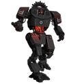 |
蹂躏者 | 中型-有护甲 机器人 unit armed with fusion 特攻 cannons. |
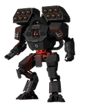 |
Rocket 蹂躏者 | 蹂躏者 变体 armed with fusion arm cannons and shoulder-mounted rocket launchers, capable of hitting 绝地潜兵 掩体后. |
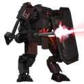 |
重型 蹂躏者 | 蹂躏者 变体 armed with a fusion 机枪 and a large shield, capable of 压制中 绝地潜兵 and blocking incoming 火焰. |
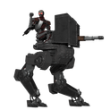 |
侦察纵步者 | 有护甲 机器人 recon walker, armed with a 重型 fusion repeater and manned by a single 装甲兵 shielded from 小型 arms 火焰 from the 正面. |
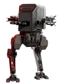 |
Reinforced 侦察纵步者 | A reinforced 变体 of the 侦察纵步者 armed with rockets and 护甲 surrounding the entire pilot. |
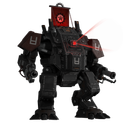 |
Hulk Obliterator | Large, heavily 有护甲 机器人 unit armed with dual rocket launchers. |
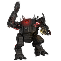 |
Hulk Scorcher | Hulk 变体 armed with a 重型 火焰喷射器 and large sawblade, specializing in close quarters combat. |
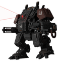 |
Hulk Bruiser | Hulk 变体 equipped with a burst 火箭发射器 and fusion 机炮. |
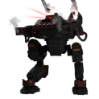 |
War Strider | Heavily 有护甲 机器人 walker unit armed with 重型 Fusion Repeaters and 爆炸 手榴弹 launchers. |
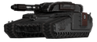 |
Annihilator Tank | Tank-有护甲 机器人 unit armed with fusion machine guns and a large cannon. |
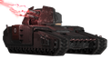 |
Shredder Tank | Tank 变体 armed with a quad-linked 重型 fusion cycler turret. |
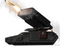 |
Barrager Tank | Tank 变体 armed with a large 导弹 array capable of 正面 & mortar 火焰. |
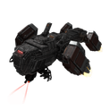 |
炮舰 | 中型-有护甲 flying 机器人 unit armed with fusion machine guns and rockets. |
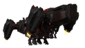 |
运输舰 | Unarmed 机器人 ship that drops in fellow 机器人 units in 回应 to a 机器人空投 flare. |
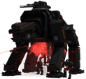 |
移动工厂 | 庞大 机器人 quad-walker, armed with twin fusion 加特林 guns and a large burst-cannon. Capable of creating and deploying squads of Devastators. |
Jet Brigade
the 
 Jet Brigade is a subfaction of the 机器人, utilizing stolen and modified LIFT-850 Jump Packs.
Jet Brigade is a subfaction of the 机器人, utilizing stolen and modified LIFT-850 Jump Packs.
| Icon | Name | 描述 |
|---|---|---|
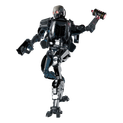 |
Jet Brigade 机械统帅 | 机械统帅 变体 equipped with a 喷气背包 for leaping large distances. |
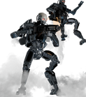 |
Jet Brigade 装甲兵 | 装甲兵 变体 equipped with a 喷气背包 for leaping large distances. |
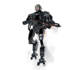 |
Jet Brigade MG Raider | MG Raider 变体 equipped with a 喷气背包 for leaping large distances. |
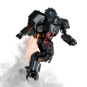 |
Jet Brigade 蹂躏者 | 蹂躏者 变体 equipped with a 喷气背包 for leaping large distances. |
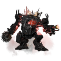 |
Jet Brigade Hulk Scorcher | A 变体 of the Hulk Scorcher equipped with a large 喷气背包, allowing them to leap great distances. |
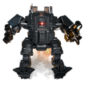 |
Jet Brigade Hulk Bruiser | A 变体 of the Hulk Bruiser equipped with a large 喷气背包, allowing them to leap great distances. |
Incineration Corps
the 
 Incineration Corps are a subfaction of the 机器人, primarily utilizing flame 武器库.
Incineration Corps are a subfaction of the 机器人, primarily utilizing flame 武器库.
| Icon | Name | 描述 |
|---|---|---|
| Pyro 装甲兵 | Reinforced 机器人 unit equipped with a 火焰喷射器 and a backpack-mounted 燃料箱. | |
| 燃烧弹 Rocket Raider | 轻型 机器人 unit armed with a specialized 火箭发射器. | |
| 燃烧弹 MG 蹂躏者 | 重型 蹂躏者 变体 with a slower firing 燃烧弹 fusion 机枪. | |
| Conflagration 蹂躏者 | 蹂躏者 变体 armed with an 燃烧弹 fusion 霰弹枪 and a large shield, capable of 压制中 绝地潜兵 and blocking incoming 火焰. | |
| Hulk Firebomber | Hulk 变体 equipped with a large 火焰喷射器 and 燃烧弹 榴弹发射器. |
Cyborg Legion
the 
 Cyborg Legion are a subfaction of the 机器人, consisting of human fighters enhanced with various 赛博机械.
Cyborg Legion are a subfaction of the 机器人, consisting of human fighters enhanced with various 赛博机械.
| Icon | Name | 描述 |
|---|---|---|
| Radical | Cybernetically enhanced human soldiers equipped with a 重型 霰弹枪 and "techno-martial arts." | |
| Agitator | Cyborg field 指挥官, able to take 正面 指挥 of their 机器人 underlings. | |
| Vox Engine | 庞大 Cyborg Mech equipped with 重型 fusion cannons, a 导弹 array and 加特林 guns. |
光能者
the  光能者 are an 古代 race, once 思想 completely decimated after their defeat in the 第一次银河战争. Now, they have returned to avenge Super Earths genocide of their ancestors.
光能者 are an 古代 race, once 思想 completely decimated after their defeat in the 第一次银河战争. Now, they have returned to avenge Super Earths genocide of their ancestors.
They make significant use of their 古代 technology, employing 能量 护盾, jet-packs, laser 武器 and drones.
| Icon | Name | 描述 |
|---|---|---|
| 无票者 | An Agile skirmisher unit that 攻击 in hordes. | |
| 守望者 | Flying drone equipped with 弧度 武器库 and the 能力 to call for 增援. | |
| 监视者 | 精英单位 equipped with an 能量护盾 and a deadly lance capable of launching an 爆炸 投射物, 通常 accompanies hordes of 无票者. | |
| 崇高监视者 | 精英单位 equipped with 全自动 plasma rifles and jet-packs, 通常 accompanies hordes of 无票者. | |
| Crescent 监视者 | 精英单位 equipped with a large plasma cannon, capable of 正面 & mortar 火焰, 通常 accompanies hordes of 无票者. | |
| Fleshmob | An amalgamation of 无票者 corpses, this large 光能者 unit specializes in close quarters combat and 充能次数 at 绝地潜兵 to 攻击. | |
| 猎杀器 | 庞大 autonomous tripod with an 能量护盾 and a large 激光武器. Can also use 弧度 武器库 in close-quarters. | |
| Stingray | Flying 光能者 unit that deploys strafing runs against 绝地潜兵, dealing 庞大 伤害 over a large area. | |
| Warp Ship | 运输 aircraft used for deploying 增援 for the 光能者. | |
| Leviathan | Tank-有护甲 flying 光能者 unit, armed with large beams cannons and bomb bays. | |
| 光能者统御舰 | Unarmed host ships, these units act as 指挥 centers for 光能者 ground forces. |
Appropriators
the 
 Appropriators are a subfaction of the 光能者 represented purely by their own kind and their machines, piloted and autonomous. In addition to 标准 光能者 units, they field unique piloted walkers and drone 变体. 无票者, 肉瘤体, 新月监视者 和 刺魟 do not spawn in this subfaction.
Appropriators are a subfaction of the 光能者 represented purely by their own kind and their machines, piloted and autonomous. In addition to 标准 光能者 units, they field unique piloted walkers and drone 变体. 无票者, 肉瘤体, 新月监视者 和 刺魟 do not spawn in this subfaction.
| Icon | Name | 描述 |
|---|---|---|
| Veracitor | A piloted 光能者 war machine, with arm-like appendages. | |
| Gatekeeper | A piloted 光能者 war machine, with plasma guns and 已增加 护甲. | |
| Obtruder | Swarming drones that 火焰 plasma projectiles and travel in groups. A variation of the 守望者. |
无脑群氓
the 
 Mindless Masses are a subfaction of the 光能者 consisting mostly of excessive numbers of 肉瘤体 和 无票者. When it is active on a 行星, these 敌人 will spawn more 频繁, while other units will spawn less. 崇高监视者 和 刺魟 do not spawn at all in this subfaction.
Mindless Masses are a subfaction of the 光能者 consisting mostly of excessive numbers of 肉瘤体 和 无票者. When it is active on a 行星, these 敌人 will spawn more 频繁, while other units will spawn less. 崇高监视者 和 刺魟 do not spawn at all in this subfaction.
窃票者
the 
 Vote Snatchers are a subfaction of the 光能者. They are accompanied by 无票者 and Fleshmobs. 监视者 do not appear to spawn with them, but this has not yet been confirmed.
Vote Snatchers are a subfaction of the 光能者. They are accompanied by 无票者 and Fleshmobs. 监视者 do not appear to spawn with them, but this has not yet been confirmed.
超级地球
另见: 联邦 of 超级地球
 超级地球's 武装力量 and citizens whom 绝地潜兵 can encounter on the battlefield. While not 敌对, they do pose a risk of 友军误伤.
超级地球's 武装力量 and citizens whom 绝地潜兵 can encounter on the battlefield. While not 敌对, they do pose a risk of 友军误伤.
| Icon | Name | 描述 |
|---|---|---|
| 平民 | Unarmed 超级地球 citizens, mostly found running away from 危险. | |
| SEAF 战士 | Lightly-有护甲 超级地球 ground troops, variously armed with 特攻 rifles, SMGs, machine guns, 消耗性反坦克武器 launchers, and 爆炸 grenades. | |
| 绝地潜兵 | 超级地球's elite fighting force, these units can be equipped with a variety of 武器, 战略配备, and employ a variety of 战术. |